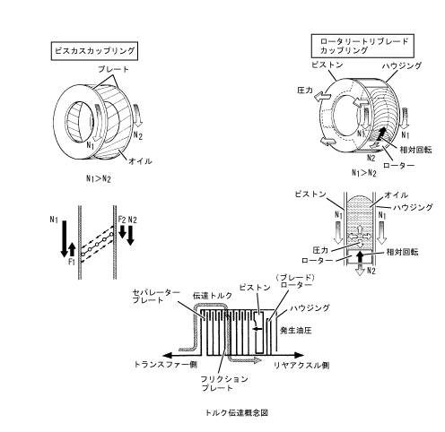
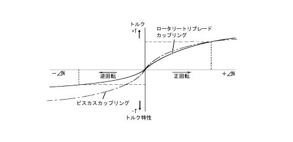

| ロータリートリブレードカップリング |
| ● |
ロータリートリブレードカップリングは，形体的にビスカスカップリングと類似していますが，機構は全く異なっています。ビスカスカップリングは，シリコンオイルがせん断される時に発生するせん断応力を利用してトルク伝達を行う機構であるのに対し，ロータリートリブレードカップリングは，シリコンオイルに発生する圧力を利用した機構です。
|
| ● |
ロータリートリブレードカップリングのローターがハウジングまたはピストンに対して相対回転（差動）すると，シリコンオイルがローター前面で押されながら移動（流動）します。そのとき，シリコンオイル-ハウジング-ピストンの間に生ずるシリコンオイルの流動抵抗により，シリコンオイルに圧力が発生します。その発生した圧力がピストンに作用して湿式多版クラッチを圧着させ，トルク伝達を行います。
|
|  |
| ● |
ロータリートリブレードカップリングは，ローターの片面で圧力を発生させるためにローター（ブレード）形状を非対称とし，回転方向によって発生圧力の大きさや伝達トルクの大きさが変わる機構によって，ABS作動時の前・後輪間トルク干渉を小さくしています。したがって，ABS作動時も4WDとして機能させながら安定した制動性能が得られます。
|
|  |
 ロータリートリブレードカップリングの構造 ロータリートリブレードカップリングの構造
|